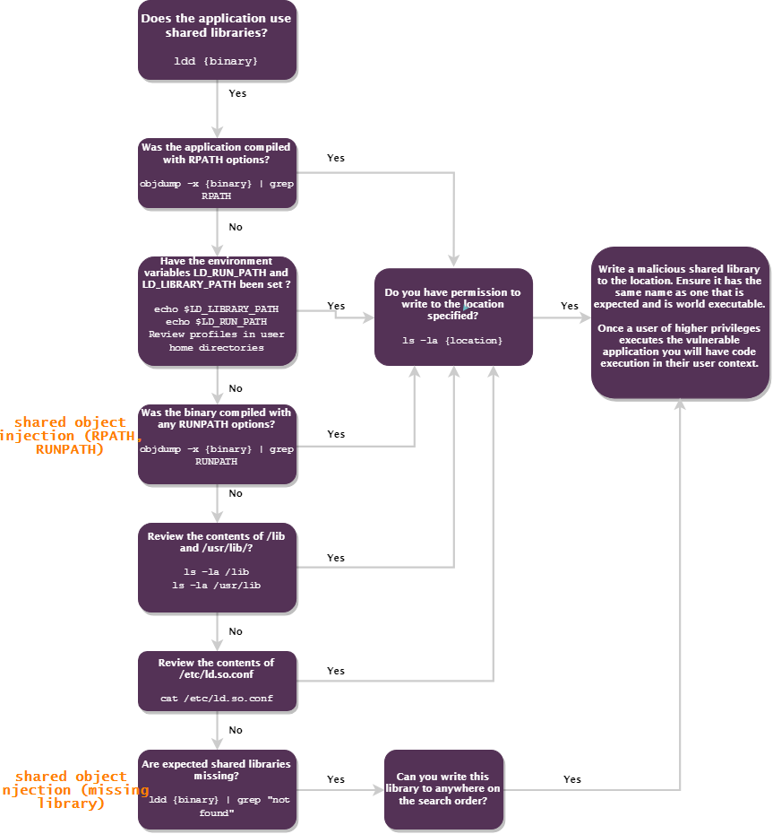
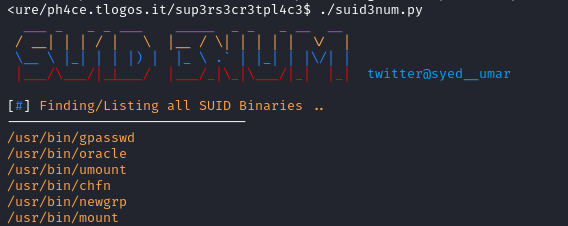

7. SUID/SGID Executables
To abuse of these executables we do not need to run them with sudo like in the chapter Sudo
The setuid bit appears as an s
It may be possible to reverse engineer the program with the SETUID bit set, identify a vulnerability, and exploit this to escalate our privileges.
• SUID files get executed with the privileges of the file owner(user).
• SGID files get executed with the privileges of the file group. If the file is owned by root, it gets executed with root privileges, and we may be able to use it to escalate privileges.
Shell Escape Sequences
Just as we were able to use shell escape sequences with programs running via sudo, we can do the same with SUID/SGID files.
A list of programs with their shell escape sequences can be found here: https://gtfobins.github.io/
No LD_PRELOAD & LD_LIBRARY_PATH for executables
We cannot use the same LD_PRELOAD and LD_LIBRARY_PATH environment variables tricks used in Sudo Privilege Escalation because they are disabled by default for SUID files executable, due the obvious security risk.
Manually locate files with the SUID or SGID bits set:
• SUID or SGID
target@debian:~$ find / -type f -a \( -perm -u+s -o -perm -g+s \) -exec ls -l {} \; 2> /dev/null #<--- BETTER
target@debian:~$ find / -perm -u+s -o -perm -g+s -type f 2>/dev/null #alternative


• SUID and SGID
-06000,-6000, -u+s , -u=s are the same thing
find / -user root -perm -6000 -exec ls -ldb {} \; 2>/dev/null #owned by root
find / -perm -6000 -exec ls -ldb {} \; 2>/dev/null
• Only SUID
-04000,-4000, -u+s , -u=s are the same thing
target@debian:~$ find / -user root -perm -4000 -exec ls -ldb {} \; 2>/dev/null #suid bit programs owned by root
target@debian:~$ find / -type f -a \( -perm -u+s \) -exec ls -l {} \; 2> /dev/null #suid bit owned by any user
target@debian:~$ find / -perm -04000 -type f 2>/dev/null #suid bit owned by any user
◇ search SUID in local partitions:
#From CIS
target@debian:~$ df --local -P | awk '{if (NR!=1) print $6}' | xargs -I '{}' find '{}' -xdev -type f -perm -4000
◇ search SUID in network partitions:
The command above only searches local filesystems, there may still be compromised items on network mounted partitions.
Additionally the --local option to df is not universal to all versions, it can be omitted to search all filesystems on a system including network mounted filesystems or the following command can be run manually for each partition
target@debian:~$ lsblk #show partitions
target@debian:~$ find <partition> -xdev -type f -perm -4000
• Only SGID
-02000,-2000, -g+s , -g=s are the same thing
target@debian:~$ find / -user root -perm -2000 -exec ls -ldb {} \; 2>/dev/null
target@debian:~$ find / -type f -a \( -perm -g+s \) -exec ls -l {} \; 2> /dev/null
◇ search SUID in local partitions:
#From CIS
target@debian:~$ df --local -P | awk '{if (NR!=1) print $6}' | xargs -I '{}' find '{}' -xdev -type f -perm -2000
◇ search SUID in network partitions:
The command above only searches local filesystems, there may still be compromised items on network mounted partitions.
Additionally the --local option to df is not universal to all versions, it can be omitted to search all filesystems on a system including network mounted filesystems or the following command can be run manually for each partition
target@debian:~$ lsblk #show partitions
target@debian:~$ find <partition> -xdev -type f -perm -2000
To run a service with privileges from a group:
target@debian:~$ sudo -u user1 -g users [service]

Tools:
• https://github.com/Anon-Exploiter/SUID3NUM
differentiate from default binaries and more interesting files with SUID

Bibliography:
• TCM Security: Linux Privilege Escalation for Beginners (https://academy.tcm-sec.com/p/linux-privilege-escalation)
• Tib3rius: Linux Privilege Escalation for OSCP & Beyond! (https://www.udemy.com/course/linux-privilege-escalation/)